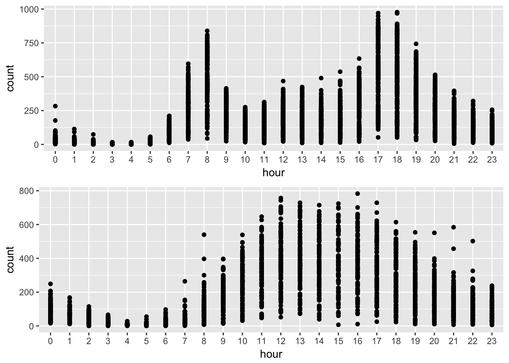
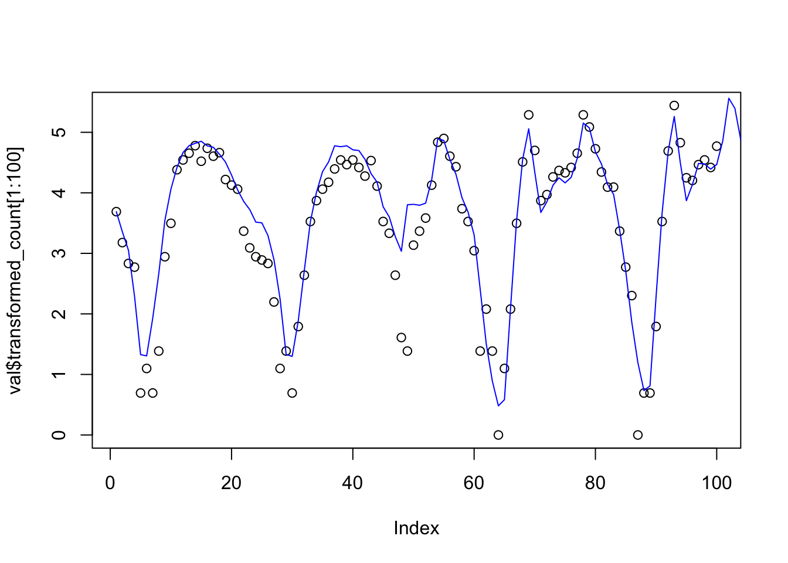
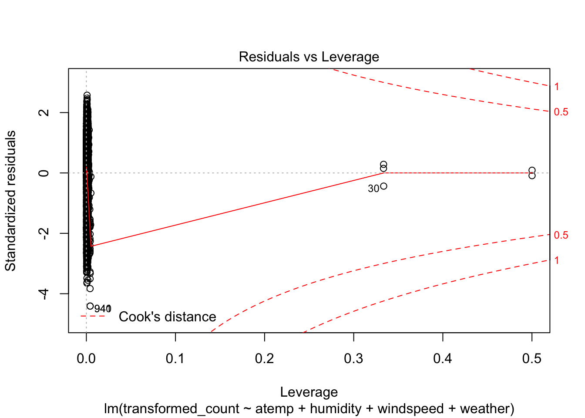
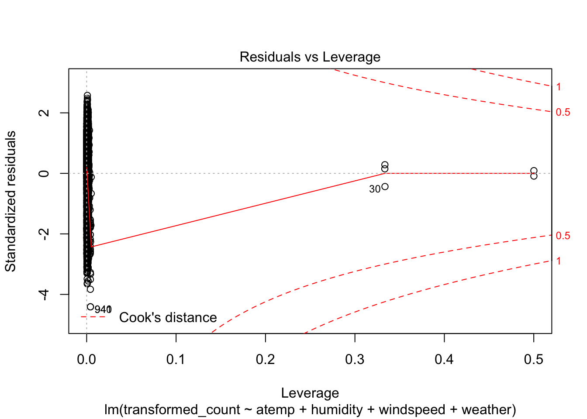

hw1
Zihao_Wang
10/7/2018
Last updated: 2018-10-16
workflowr checks: (Click a bullet for more information)-
✖ R Markdown file: uncommitted changes
The R Markdown file has unstaged changes. To know which version of the R Markdown file created these results, you’ll want to first commit it to the Git repo. If you’re still working on the analysis, you can ignore this warning. When you’re finished, you can runwflow_publishto commit the R Markdown file and build the HTML. -
✔ Environment: empty
Great job! The global environment was empty. Objects defined in the global environment can affect the analysis in your R Markdown file in unknown ways. For reproduciblity it’s best to always run the code in an empty environment.
-
✔ Seed:
set.seed(20181007)The command
set.seed(20181007)was run prior to running the code in the R Markdown file. Setting a seed ensures that any results that rely on randomness, e.g. subsampling or permutations, are reproducible. -
✔ Session information: recorded
Great job! Recording the operating system, R version, and package versions is critical for reproducibility.
-
Great! You are using Git for version control. Tracking code development and connecting the code version to the results is critical for reproducibility. The version displayed above was the version of the Git repository at the time these results were generated.✔ Repository version: 4f3ddee
Note that you need to be careful to ensure that all relevant files for the analysis have been committed to Git prior to generating the results (you can usewflow_publishorwflow_git_commit). workflowr only checks the R Markdown file, but you know if there are other scripts or data files that it depends on. Below is the status of the Git repository when the results were generated:
Note that any generated files, e.g. HTML, png, CSS, etc., are not included in this status report because it is ok for generated content to have uncommitted changes.Ignored files: Ignored: .DS_Store Untracked files: Untracked: analysis/CopyOfhw1.Rmd Untracked: assignment/syllabus.pdf Unstaged changes: Modified: analysis/hw1.Rmd
Expand here to see past versions:
rm(list=ls())
set.seed(12345)
options(warn = -1)
knitr::opts_knit$set(root.dir = '~/Desktop/stat374-fall-2018/analysis/')
library(kedd)
library(locfit)locfit 1.5-9.1 2013-03-22library(gridExtra)
library(reshape)1. Computing and plotting with R
(a)
## function to compute empirical mean square error
mse <- function(n,sigma){
mysample = rnorm(n = n, sd = sigma, mean = 1)
return((mean(mysample)-1)^2)
}
emse <- function(n,sigma,B){
return(mean(replicate(B,mse(n,sigma))))
}
## simulate and plot
sigma = 1
B = 100
ns = seq(1,1000,5)
results = replicate(length(ns),0)
theory = replicate(length(ns),0)
for(i in 1:length(ns)){
results[i] = emse(ns[i],sigma,B)
theory[i] = sigma^2/ns[i]
}
plot(log(ns), log(results), xlab = "n", ylab = "mse")
lines(log(ns),log(theory), col = "red")
Expand here to see past versions of unnamed-chunk-2-1.png:
| Version | Author | Date |
|---|---|---|
| 4f3ddee | zihao12 | 2018-10-08 |
Comment:
From the simulation experiments, we can see the results align with theoretical results
(b)
n = 1000
sigma = 1
B = 100
## simulation
Z = replicate(B,sqrt(n)*(mean(rnorm(n,1,sigma)) - 1))
## theoretical standard normal
ns = seq(-10,10,0.01)
theory = replicate(length(ns),0)
for(i in 1:length(ns)){
theory[i] = 1/sqrt(2*pi) * exp(-ns[i]^2 *0.5)
}
plot(density(Z,), col = "blue")
lines(ns,theory,col = "red")
Expand here to see past versions of unnamed-chunk-3-1.png:
| Version | Author | Date |
|---|---|---|
| 4f3ddee | zihao12 | 2018-10-08 |
2 Leave-oue-out cross-validation
(a)
By definition, \(\hat{R}(h) = \frac{1}{n} * \sum_{i = 1}^{n} (r(x_{i})-\hat{r}_{-i}(x_{i}))^2\). Then we have \(r(x_{i}) - \hat{r}_{-i}(x_{i}) = Y_{i} - \frac{\sum_{k \neq i} L_{i,k} * Y_{k}}{1-L_{ii}} = \frac{Y_{i} - \hat{r}_{n}(x_{i})} {1-L _{ii}}\). Then our desired equation follows.
(b)
See what the data looks like
StochasticDoppler <- function(x,sigma=0.1){
y = sqrt(x*(1-x)) * sin(2.1*pi/(x+0.05)) + sigma * rnorm(1,0,1)
return(y)
}
Doppler <- function(x){
y = sqrt(x*(1-x)) * sin(2.1*pi/(x+0.05))
return(y)
}
N = 1000
Xs = seq(1,N)/N
ys <- sapply(Xs, StochasticDoppler)
ys_true = sapply(Xs,Doppler)
plot(Xs,ys)Plot Cross-validation-score (use GCV as approximate) vs bandwidth
# # using package
# gcvs = gcvplot(ys~Xs, alpha = seq(0,0.5,0.01))
# plot(gcvs$alpha, gcvs$values)
## handwritten
## Gaussian kernel function
K <- function(x){
return(1/sqrt(2*pi) * exp(-x^2/2))
}
h = 0.02
### compute L (L_ij = l_j(x_i), rowSums(L) = 1,1...)
n = length(Xs)
X_matrix = replicate(n,Xs)
X_difference_scaled = (X_matrix - t(X_matrix))/h
X_difference_scaled_kernel = K(X_difference_scaled) ## X_ij = K((Xi-Xj)/h)
L = diag(1/rowSums(X_difference_scaled_kernel)) %*% X_difference_scaled_kernel
### Compute Lii
L_diag = diag(L)
### Compute ys_hat
ys_hat = L %*% ys
### Conmpute R_hat
R_hat = mean(((ys-ys_hat)/(1-L_diag))^2)
print(R_hat)[1] 0.02281866Rhat <- function(h,Xs){
### compute L (L_ij = l_j(x_i), rowSums(L) = 1,1...)
n = length(Xs)
X_matrix = replicate(n,Xs)
X_difference_scaled = (X_matrix - t(X_matrix))/h
X_difference_scaled_kernel = K(X_difference_scaled) ## X_ij = K((Xi-Xj)/h)
L = diag(1/rowSums(X_difference_scaled_kernel)) %*% X_difference_scaled_kernel
### Compute Lii
L_diag = diag(L)
### Compute ys_hat
ys_hat = L %*% ys
### Conmpute R_hat
R_hat = mean(((ys-ys_hat)/(1-L_diag))^2)
return(R_hat)
}hs = seq(0,0.05,0.001)
myloocvs <- sapply(hs, function(h) Rhat(h,Xs))
plot(myloocvs)
h_star = hs[which.min(myloocvs)]
smoothed = locfit(ys~Xs,alpha = c(h_star))
plot(smoothed, col = "red")
lines(Xs,ys_true)# using package
gcvs = gcvplot(ys~Xs, alpha = seq(0,0.5,0.01))
plot(gcvs$alpha, gcvs$values)Plot the local linear estimates using optimum bandwidth
h_star = gcvs$alpha[which.min(gcvs$values)]
smoothed = locfit(ys~Xs,alpha = c(h_star))
plot(smoothed, col = "red")
lines(Xs,ys_true)
compute and plot the confidence interval for r(x)
I assume that in the model noise \(\epsilon\) follows \(N(0,\sigma^2)\) for some unknown \(\sigma\) (first question, is it normal, second: constant variance)
For fixed x, \[\hat{r}_{n}(x) = \sum_{i = 1}^{n} l_{i}(x) Y_{i} = \sum_{i = 1}^{n} l_{i}(x) (r(x_i) + \epsilon_{i})) = \sum_{i = 1}^{n} l_{i}(x)r(x_i) + \sum_{i = 1}^{n} l_{i}(x)\epsilon_{i}\]. It is obvious that \(\hat{r}_{n}(x)\) follows normal distribution, with mean \(r(x)\), variance \(\sigma_^2 |l(x)|^2\). (both can be found in ANoS). However, since we need to estimate \(\sigma\) with data, using the formula:
\[\hat{\sigma}(x)^{2} = \frac{\sum_{i = 1}^{n} (Y_i - \hat{r_n}(x_i))^2}{n-2\gamma + \hat{\gamma}}; \gamma = tr(L), \hat{\gamma} = tr(L^TL) \]
then the \(I_{n}(x)\) in question is not the 95 percent pointwise confidence interval for \(r(x)\), as we will need a F distribution, not a Z.
Below I will plot the confidence interval \(I_{n}(x)\) for \(r(x)\).
## assume sigma is constant
n = length(Xs)
gamma = as.numeric(smoothed$dp["df1"])
gamma_hat = as.numeric(smoothed$dp["df2"])
ys_smoothed = fitted(smoothed)
sigma_hat = sum((ys-ys_smoothed)^2)/(n-2*gamma)
## Gaussian kernel function
K <- function(x){
return(1/sqrt(2*pi) * exp(-x^2/2))
}
## l(x) for each x
L <- function(x,Xs,h){
l = sapply(Xs, function(xi) K((x-xi)/h))
return(l/sum(l))
}
L_norm <- function(x,Xs,h){
l = L(x,Xs,h)
return(sqrt(sum(l^2)))
}
In_UpperLower <- function(x,sm,Xs,h,sigma_hat,z=1.96){
## sm is a locfit object
n = length(Xs)
## rhat(x)
r_hat_x = predict(sm,x)
## may also need to compute sigmahat(x) with some formula
## |l(x)|
l_x_norm = L_norm(x,Xs,h)
upper = r_hat_x + z* sigma_hat * l_x_norm
lower = r_hat_x - z* sigma_hat * l_x_norm
return(c(upper,lower))
}
ups = replicate(length(Xs),0)
los = replicate(length(Xs),0)
for(i in 1:length(Xs)){
out = In_UpperLower(Xs[i],smoothed,Xs,h_star,sigma_hat)
ups[i] = out[1]
los[i] = out[2]
}
plot(smoothed, col = "red")
lines(ups,col = "green")
lines(los, col = "blue")summary(ys_smoothed) Min. 1st Qu. Median Mean 3rd Qu. Max.
-0.53218 -0.14360 0.06129 0.04957 0.28263 0.50210 summary(ups - los) Min. 1st Qu. Median Mean 3rd Qu. Max.
0.004861 0.004861 0.004861 0.004961 0.004861 0.006848 3. Kernel density estimate for Old Faithful Geyser
data("faithful")
attach(faithful)
library(kedd)
ucv_eruptions = h.ucv(eruptions,nb = 1000)
plot(ucv_eruptions)
$kernel
[1] "gaussian"
$deriv.order
[1] 0
$seq.bws
[1] 0.06382504 0.07988984 0.09595465 0.11201945 0.12808426 0.14414906
[7] 0.16021387 0.17627867 0.19234348 0.20840828 0.22447309 0.24053789
[13] 0.25660269 0.27266750 0.28873230 0.30479711 0.32086191 0.33692672
[19] 0.35299152 0.36905633 0.38512113 0.40118594 0.41725074 0.43331555
[25] 0.44938035 0.46544516 0.48150996 0.49757477 0.51363957 0.52970438
[31] 0.54576918 0.56183399 0.57789879 0.59396360 0.61002840 0.62609321
[37] 0.64215801 0.65822282 0.67428762 0.69035243 0.70641723 0.72248204
[43] 0.73854684 0.75461165 0.77067645 0.78674126 0.80280606 0.81887087
[49] 0.83493567 0.85100048
$ucv
[1] -0.4232268 -0.4258325 -0.4268588 -0.4268189 -0.4259983 -0.4246085
[7] -0.4228091 -0.4207043 -0.4183518 -0.4157788 -0.4129965 -0.4100111
[13] -0.4068286 -0.4034573 -0.3999082 -0.3961946 -0.3923311 -0.3883332
[19] -0.3842161 -0.3799950 -0.3756846 -0.3712988 -0.3668511 -0.3623543
[25] -0.3578208 -0.3532625 -0.3486911 -0.3441178 -0.3395537 -0.3350094
[31] -0.3304954 -0.3260215 -0.3215974 -0.3172321 -0.3129343 -0.3087120
[37] -0.3045724 -0.3005222 -0.2965672 -0.2927126 -0.2889626 -0.2853210
[43] -0.2817903 -0.2783726 -0.2750693 -0.2718809 -0.2688074 -0.2658482
[49] -0.2630020 -0.2602672ucv_waiting = h.ucv(waiting,nb = 1000)
plot(ucv_waiting)
$kernel
[1] "gaussian"
$deriv.order
[1] 0
$seq.bws
[1] 0.7602256 0.9515749 1.1429243 1.3342736 1.5256229 1.7169722
[7] 1.9083215 2.0996708 2.2910201 2.4823694 2.6737187 2.8650681
[13] 3.0564174 3.2477667 3.4391160 3.6304653 3.8218146 4.0131639
[19] 4.2045132 4.3958625 4.5872118 4.7785612 4.9699105 5.1612598
[25] 5.3526091 5.5439584 5.7353077 5.9266570 6.1180063 6.3093556
[31] 6.5007050 6.6920543 6.8834036 7.0747529 7.2661022 7.4574515
[37] 7.6488008 7.8401501 8.0314994 8.2228487 8.4141981 8.6055474
[43] 8.7968967 8.9882460 9.1795953 9.3709446 9.5622939 9.7536432
[49] 9.9449925 10.1363419
$ucv
[1] -0.02395152 -0.02440334 -0.02467032 -0.02482935 -0.02492616
[6] -0.02498823 -0.02503085 -0.02506151 -0.02508310 -0.02509613
[11] -0.02510007 -0.02509402 -0.02507721 -0.02504910 -0.02500946
[16] -0.02495830 -0.02489589 -0.02482263 -0.02473907 -0.02464581
[21] -0.02454353 -0.02443293 -0.02431474 -0.02418970 -0.02405855
[26] -0.02392202 -0.02378083 -0.02363570 -0.02348733 -0.02333637
[31] -0.02318346 -0.02302922 -0.02287421 -0.02271897 -0.02256400
[36] -0.02240976 -0.02225667 -0.02210509 -0.02195537 -0.02180779
[41] -0.02166261 -0.02152005 -0.02138029 -0.02124346 -0.02110968
[46] -0.02097903 -0.02085156 -0.02072730 -0.02060626 -0.02048841plot estimated density with optimum h
plot(density(eruptions, bw = ucv_eruptions$h))
plot(density(waiting, bw = ucv_waiting$h))5 Capital Bike Sharing
data = read.csv("../data/hw1/train.csv")
test = read.csv("../data/hw1/test.csv")
fac_names = c("holiday","workingday","weather")
for(i in 1:length(fac_names)){
name = fac_names[i]
data[[name]] = as.factor(data[[name]])
test[[name]] = as.factor(test[[name]])
}
data[["transformed_count"]] = log(data$count + 1)
## split train into train and validation
train = data[data$day < 16,]
val = data[data$day > 15,]#plot(density(train$count))
hist(train$count)
library(tidyverse)── Attaching packages ──────────────────────────────────────────────────────────────────────────────────────────────────────────────────────────────────────────────────────────────────────────────────── tidyverse 1.2.1 ──✔ ggplot2 2.2.1 ✔ purrr 0.2.5
✔ tibble 1.4.2 ✔ dplyr 0.7.4
✔ tidyr 0.8.1 ✔ stringr 1.3.1
✔ readr 1.1.1 ✔ forcats 0.3.0── Conflicts ─────────────────────────────────────────────────────────────────────────────────────────────────────────────────────────────────────────────────────────────────────────────────────── tidyverse_conflicts() ──
✖ dplyr::combine() masks gridExtra::combine()
✖ tidyr::expand() masks reshape::expand()
✖ dplyr::filter() masks stats::filter()
✖ dplyr::lag() masks stats::lag()
✖ dplyr::rename() masks reshape::rename()p1 = ggplot(train,aes(atemp, count, color = weather)) +
geom_point()
p2 = ggplot(train,aes(humidity,count, color = weather)) +
geom_point()
p3 = ggplot(train,aes(windspeed,count, color = weather)) +
geom_point()
grid.arrange(p1,p2,p3,nrow = 3)### Comment: Findings: * on most of the days, there are no counts at all! The curve is like exponential. * counts higher on good weather * counts are highest when atemp is at around 30; more negatively affected if atemp is too low than too hot * counts are higher when windspeed is low * counts seem not to be affacted by humidity too much, though extreme humiditity (likely raining reduce counts)
(a) linear model on count
linearMD = lm(transformed_count~atemp+humidity+windspeed+weather, data=train)
summary(linearMD)
Call:
lm(formula = transformed_count ~ atemp + humidity + windspeed +
weather, data = train)
Residuals:
Min 1Q Median 3Q Max
-5.5098 -0.6248 0.2366 0.8522 3.2233
Coefficients:
Estimate Std. Error t value Pr(>|t|)
(Intercept) 4.3459479 0.0718913 60.452 < 2e-16 ***
atemp 0.0631774 0.0015523 40.700 < 2e-16 ***
humidity -0.0233339 0.0008053 -28.975 < 2e-16 ***
windspeed 0.0089966 0.0017553 5.125 3.03e-07 ***
weather1.5 -3.4706308 0.8858171 -3.918 9.00e-05 ***
weather2 0.2185450 0.0329459 6.633 3.48e-11 ***
weather2.5 -3.4413334 0.7234583 -4.757 2.00e-06 ***
weather3 -0.0241354 0.0547990 -0.440 0.660
weather4 1.9946955 1.2525671 1.592 0.111
---
Signif. codes: 0 '***' 0.001 '**' 0.01 '*' 0.05 '.' 0.1 ' ' 1
Residual standard error: 1.252 on 8631 degrees of freedom
Multiple R-squared: 0.2605, Adjusted R-squared: 0.2598
F-statistic: 380.1 on 8 and 8631 DF, p-value: < 2.2e-16plot(linearMD) 

linearPredict = predict(linearMD, subset(val, colnames = c("atemp","humidity","windspeed","weather")))
RMSLE_log <- function(count_log,count_hat_log){
return(sqrt(mean((count_log-count_hat_log)^2)))
}
RMSLE_log(linearPredict,val$transformed_count)[1] 1.252436plot(val$transformed_count[1:100])
lines(linearPredict,col = "blue")
Comment:
Our model for linear regression is: \(Y = X*\beta + \epsilon\). The normality assumption holds, but the residue seems not to be independent of X. Also, the R-squared is only around 25%, meaning our model does not account for much variance in data. p-value suggests that we should reject the null hypothesis that the selected variables are not correlated with counts.
(b)
First, summarize the data by mean hourly counts
varnames = dimnames(train)[[2]]
ids = varnames[varnames != "transformed_count"]
val_mlt = melt(val,id = ids)
train_mlt = melt(train,id = ids)
train_mlt$value = as.numeric(train_mlt$value)
train_hourmean = cast(train_mlt,daylabel~variable,sum)
train_hourmean$transformed_count = train_hourmean$transformed_count / 24
attach(train_hourmean)
plot(daylabel,transformed_count)
attach(train_hourmean)The following objects are masked from train_hourmean (pos = 3):
daylabel, transformed_counttrain_hourmean_locfitmodel = locfit(transformed_count~daylabel)
train_hourmean_locfit = predict(train_hourmean_locfitmodel,daylabel)
plot(daylabel,train_hourmean_locfit)train_hourmean_fitted = train_hourmean
train_hourmean_fitted$transformed_count = train_hourmean_locfitattach(train_mlt)The following object is masked from train_hourmean (pos = 3):
daylabelThe following object is masked from train_hourmean (pos = 4):
daylabelu_daylabels = unique(train_mlt$daylabel)
## subtract the smoothed hourly mean from the counts in original dataset
for(i in 1:length(u_daylabels)){
train_mlt[train_mlt$daylabel == u_daylabels[i],"value"] = train_mlt[train_mlt$daylabel == u_daylabels[i],"value"] - train_hourmean_fitted[train_hourmean_fitted$daylabel == u_daylabels[i],"transformed_count"]
}
SmoothedLinearMD = lm(value ~ atemp+humidity+windspeed+weather, data = train_mlt)
SmoothedLinearPredict = as.numeric(predict(SmoothedLinearMD, subset(val_mlt, colnames = c("atemp","humidity","windspeed","weather"))))
val_new_value = predict(train_hourmean_locfitmodel,val_mlt$daylabel) + SmoothedLinearPredict
RMSLE_log(val_new_value, val_mlt$value)[1] 1.222907## show how the fit goes
plot(val_mlt$value[1:100])
lines(val_new_value[1:100], col = "blue")
lines(linearPredict,col = "red")Comment:
There is some improvement in RMSLE (1.22 to 1.25, quite big considering it is on log scale)! But from a brief look at the first 100 fits, we cannot see its advantage over the linear model very well.
(c) Using additive model
Session information
sessionInfo()R version 3.4.3 (2017-11-30)
Platform: x86_64-apple-darwin15.6.0 (64-bit)
Running under: macOS High Sierra 10.13
Matrix products: default
BLAS: /Library/Frameworks/R.framework/Versions/3.4/Resources/lib/libRblas.0.dylib
LAPACK: /Library/Frameworks/R.framework/Versions/3.4/Resources/lib/libRlapack.dylib
locale:
[1] en_US.UTF-8/en_US.UTF-8/en_US.UTF-8/C/en_US.UTF-8/en_US.UTF-8
attached base packages:
[1] stats graphics grDevices utils datasets methods base
other attached packages:
[1] forcats_0.3.0 stringr_1.3.1 dplyr_0.7.4 purrr_0.2.5
[5] readr_1.1.1 tidyr_0.8.1 tibble_1.4.2 ggplot2_2.2.1
[9] tidyverse_1.2.1 reshape_0.8.7 gridExtra_2.3 locfit_1.5-9.1
[13] kedd_1.0.3
loaded via a namespace (and not attached):
[1] reshape2_1.4.3 haven_1.1.1 lattice_0.20-35
[4] colorspace_1.3-2 htmltools_0.3.6 yaml_2.1.19
[7] rlang_0.2.0 R.oo_1.22.0 pillar_1.2.2
[10] foreign_0.8-70 glue_1.2.0 R.utils_2.6.0
[13] readxl_1.1.0 modelr_0.1.2 bindrcpp_0.2.2
[16] bindr_0.1.1 plyr_1.8.4 cellranger_1.1.0
[19] munsell_0.4.3 gtable_0.2.0 workflowr_1.0.1
[22] rvest_0.3.2 R.methodsS3_1.7.1 psych_1.8.4
[25] evaluate_0.10.1 labeling_0.3 knitr_1.20
[28] parallel_3.4.3 broom_0.4.4 Rcpp_0.12.16
[31] backports_1.1.2 scales_0.5.0 jsonlite_1.5
[34] mnormt_1.5-5 hms_0.4.2 digest_0.6.15
[37] stringi_1.2.2 grid_3.4.3 rprojroot_1.3-2
[40] cli_1.0.0 tools_3.4.3 magrittr_1.5
[43] lazyeval_0.2.1 crayon_1.3.4 whisker_0.3-2
[46] pkgconfig_2.0.1 xml2_1.2.0 lubridate_1.7.4
[49] rstudioapi_0.7 assertthat_0.2.0 rmarkdown_1.9
[52] httr_1.3.1 R6_2.2.2 nlme_3.1-137
[55] git2r_0.21.0 compiler_3.4.3 This reproducible R Markdown analysis was created with workflowr 1.0.1
Comment:
The upper and lower bounds are very close to each other. By comparing the summary of y_hat and the difference between upper and lower bound, we can see that the differences are too small.